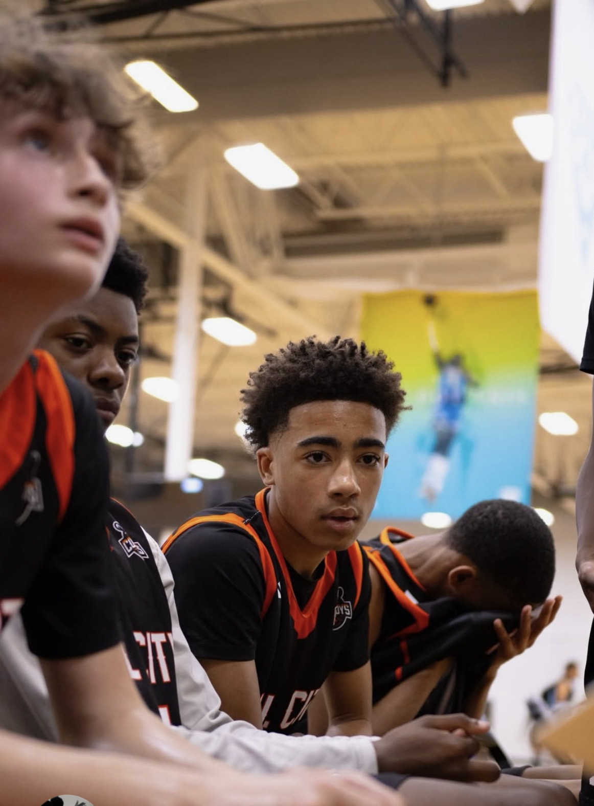
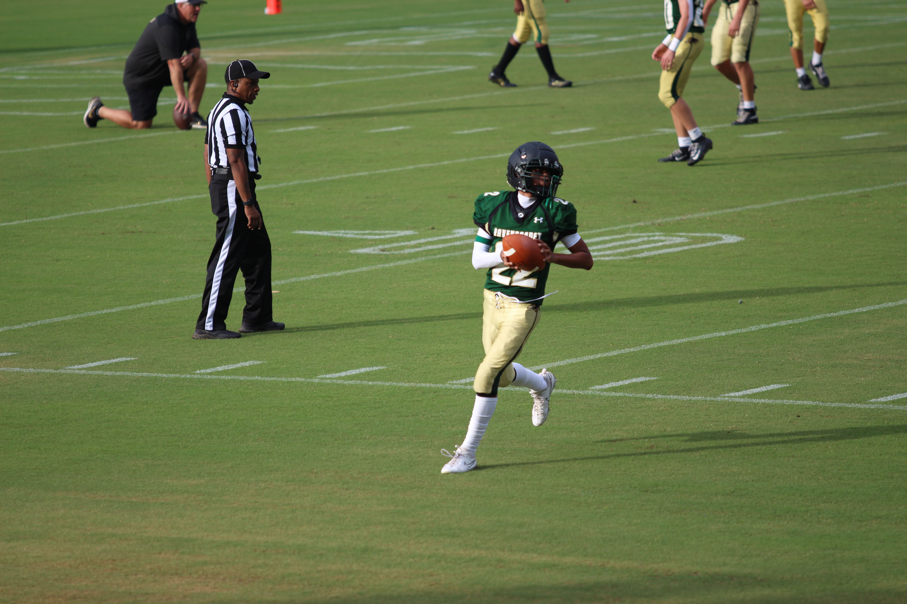
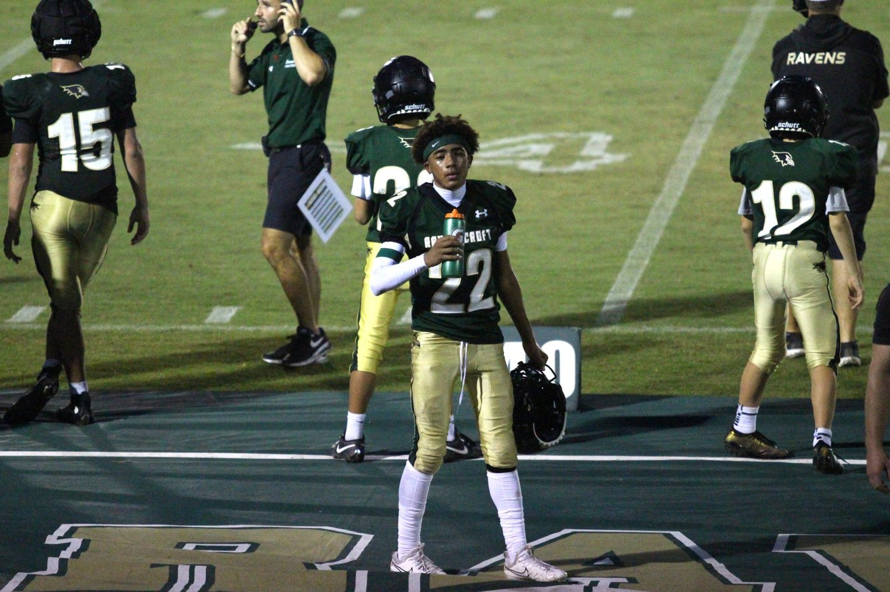

THE WORK IS THE STORY.
SHONJOHNSON II

2026–27 • CURRENT FOCUS
NEXT UP: BASKETBALL.
With the football season complete, it's back to the hardwood. Explore SJ's summer work, then follow the new season as the photos, film and game stories arrive.
8–0. UNDEFEATED.
A two-hour road trip to Sampson County. A 35–6 win at Harrells Christian Academy. An undefeated season finished the right way.



22ABOUT SJ
STUDENT. ATHLETE. LEADER.
Shon Johnson II is a Class of 2030 student-athlete at Ravenscroft School competing in football, basketball and lacrosse.
On the football field he lines up at wide receiver and defensive back; on the basketball court, he plays guard. This site brings together his sports, the work, his interests and the journey beyond the scoreboard.
OFF THE COURT • OUTSIDE THE LINES
MORE THAN AN ATHLETE.
Sports are part of the story, not the entire story. From Paris to Disney, SJ's summer brought travel, family time and experiences beyond athletics.


THE JOURNEY
SUMMER 2026
The games are part of the story. So are the places, the people and the work that happens between them. Visit the full Journal →
JULY 2026 • FRANCE
SUMMER IN FRANCE
This summer I had the chance to travel to France and experience Paris for the first time. Seeing the Eiffel Tower, Notre-Dame, the Louvre and Versailles in person was completely different from seeing them in pictures.
It was a chance to experience another country, learn some history and spend time with my family before getting back home and preparing for my freshman year.
SUMMER 2026 • WALT DISNEY WORLD
DISNEY SUMMER
Disney was another highlight of the summer. It was nice having some time to relax, have fun and enjoy the trip before football workouts and school started taking over the schedule.
One of my favorite parts was getting a picture in front of Spaceship Earth at EPCOT. Definitely a summer memory I wanted to keep.
SUMMER 2026 • BASKETBALL TRAINING
SUMMER WORK
Even with football season coming up, I stayed in the gym this summer working on my basketball game with Coach Matt. We focused on ball handling, shooting, footwork, finishing, conditioning and getting stronger.
Coach Matt has pushed me beyond just basketball. He challenges me physically and mentally, especially when I’m tired and want to slow down. He’s taught me to keep working, stay focused and get comfortable being uncomfortable.
A lot of what we worked on this summer wasn’t just about becoming a better basketball player. It was about becoming a stronger athlete and a tougher competitor.
Appreciate Coach Matt for continuing to push me and hold me accountable.
THE WORK CONTINUES. 🏀💪